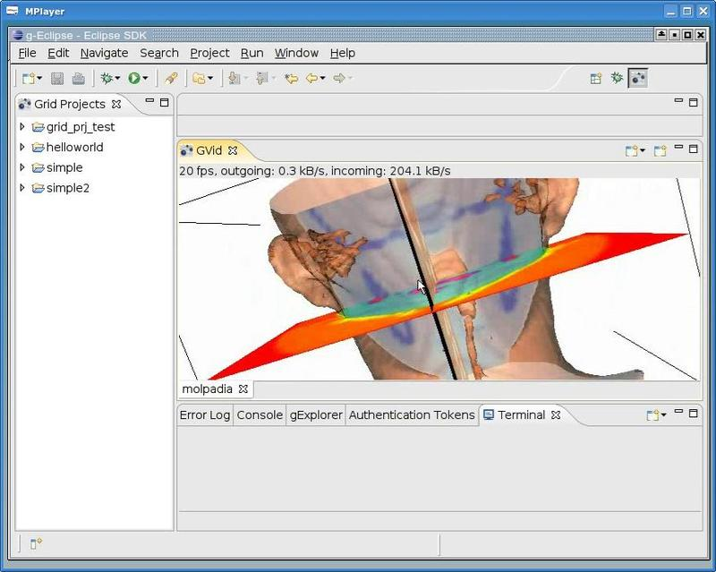

This section describes how to run a visualisation job rendered on a remote machine and displayed withing g-Eclipse.
Prerequisite: Have created a VTK Pipeline file (*.vtkpipeline), with fully defined algorithm set and an absolute path to the location of an existing data set. Refer to Creating VTK Pipeline File and Specifying VTK Pipeline Content
As of now, full functionality is not implemented and only a demo is available. To run the demo, follow the following steps.
Step 1: Open up the GVid preference window to set the codec. To do so, navigate from Window > Preferences.. > g-Eclipse > GVid. Make sure that the XviD option is selected.
Step 2: Right-click on the VTK Pipeline file and select "Render Remotely". This will bring up the GVid view.
Step 3: Click the "New Connection" drop down icon and select GLogin. In the wizard that will pop up, enter the following settings.
After a short while, you will see a demonstration of the standard VTK demo applications, being rendered remotely at hydra.gup.uni-linz.ac.at and streamed to the GVid client within g-Eclipse on your machine. You will see something like the picture below.  Figure 1: GVid demonstration